Descubra uma variedade de destinos rodoviários incríveis e planeje sua próxima viagem com praticidade, conforto e economia. Aqui você encontra as principais opções para explorar novos lugares e viver experiências únicas pelo caminho.
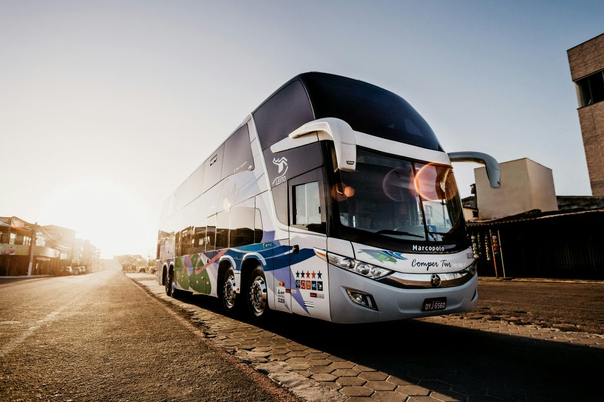
São Paulo

📍Guaruja
Cidade badalada do litoral paulista, conhecida como "Pérola do Atlântico". O visitante encontra praias famosas como Pitangueiras, Astúrias e Enseada, além do bondinho que liga Guarujá a Santos e do Aquário Municipal.

📍Ilhabela
Arquipélago de beleza selvagem com praias paradisíacas, cachoeiras e trilhas na Mata Atlântica. Os navios fundeiam no mar e utilizam lanchas para o desembarque, garantindo uma experiência exclusiva em meio à natureza.
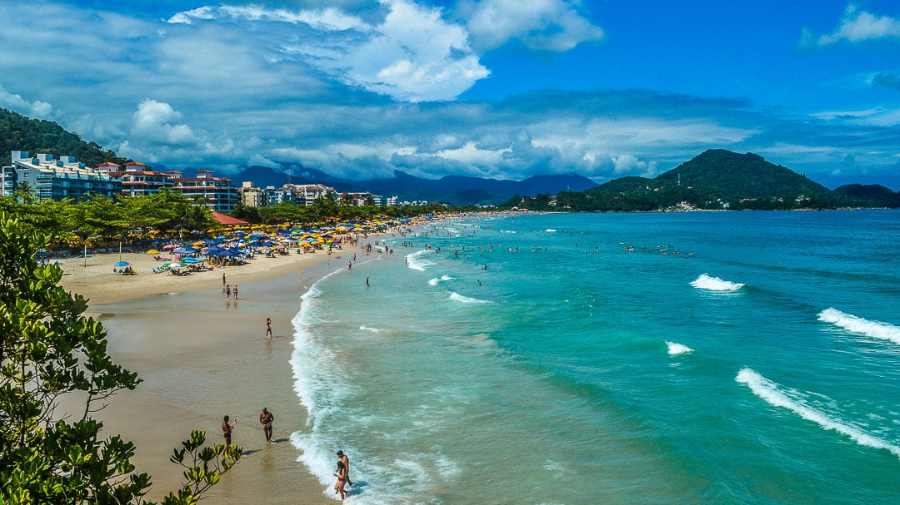
📍Ubatuba
Maior paraíso de praias e cachoeiras do litoral norte de São Paulo. São mais de 80 praias, trilhas na Mata Atlântica e forte ecoturismo. Ideal para quem ama natureza, aventura e quer explorar paisagens deslumbrantes entre o mar.
Rio de Janeiro

📍Copacabana
Um dos destinos mais icônicos do mundo, Copacabana combina paisagens deslumbrantes com a energia vibrante do Rio. Entre o mar azul, o calçadão famoso e o clima animado, é o lugar perfeito para quem busca sol e cultura.

📍Angra dos Reis
Paraíso com mais de 365 ilhas e praias de águas cristalinas. O visitante pode explorar a Lagoa Azul, a Ilha Grande e diversas praias desertas. Ideal para quem quer tranquilidade, natureza e passeios de lancha entre paisagens incríveis.
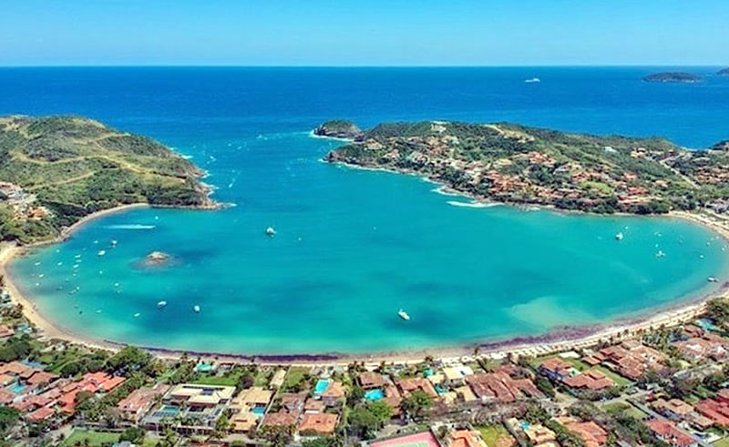
📍Búzios
Charmoso balneário que encanta com ruas de paralelepípedo e praias badaladas como Geribá, Ferradura e João Fernandes. Ideal para quem busca sofisticação, esportes náuticos, vida noturna agitada e um cenário de rara beleza natural.
Bahia

📍Porto Seguro
O berço do Brasil, onde Pedro Álvares Cabral chegou em 1500. O visitante encontra a Passarela do Álcool, o centro histórico, a Cidade Alta e praias famosas como Taperapuã e Coroa Vermelha. Muita história e festa o ano inteiro.
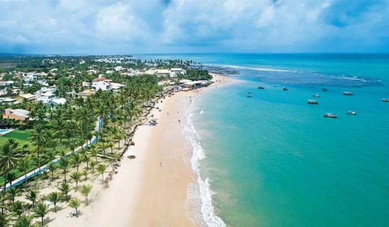
📍Praia do Forte
Distrito encantador de Mata de São João, famoso pelo Projeto Tamar e suas tartarugas marinhas. O visitante encontra praias de águas claras, o farol histórico e a reserva de sapos. Ideal para quem quer tranquilidade e contato com a natureza.

📍Salvador
Berço da cultura brasileira e primeira capital do país. O visitante desce no Pelourinho, com suas ladeiras coloridas, igrejas barrocas e música no ar. Destaque para o Elevador Lacerda, o Mercado Modelo e a culinária baiana com acarajé.
Ceará

📍Fortaleza
Capital vibrante do Ceará, famosa por suas praias urbanas e noite agitada. O visitante encontra a Praia do Futuro com suas barracas badaladas, a Feirinha da Beira-Mar, o Mercado dos Peixes e a Estátua de Iracema. Ideal para mar e diversão.
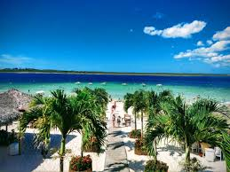
📍Jericoacoara
Paraíso rústico com dunas, lagoas e praias de ventos fortes. O visitante encontra a famosa Duna do Pôr do Sol, a Pedra Furada e as lagoas Azul e do Paraíso. Perfeito para kitesurf, relaxamento e paisagens que parecem de outro mundo.
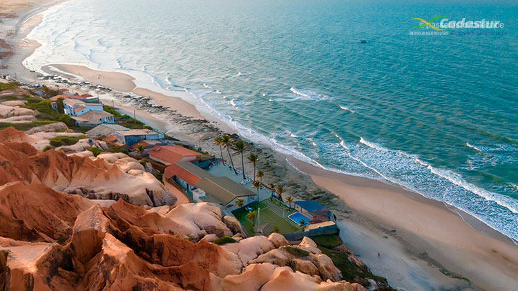
📍Morro Branco
Famoso por suas falésias coloridas e labirintos de areia. O visitante pode fazer passeio de buggy pelas dunas, conhecer a Gruta da Falésia e comprar artesanato local. Perfeito para fotos incríveis e contato com a natureza cearense.
Santa Catarina

📍Balneario Camboriú
Cidade que mais cresce no sul do país, conhecida como "Dubai brasileira". O visitante encontra a Praia Central, o Cristo Luz, o Parque Unipraias com bondinhos e o imponente prédio Yachthouse. Ideal para quem busca arranha-céus e mar.
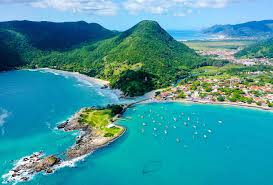
📍Florianopolis
Capital da ilha mágica,com mais de 40 praias deslumbrantes.O visitante encontra a badalada Lagoa da Conceição, a Praia Mole, o Centro Histórico e a Ponte Hercílio Luz. Ideal para quem busca natureza e esportes aquáticos.
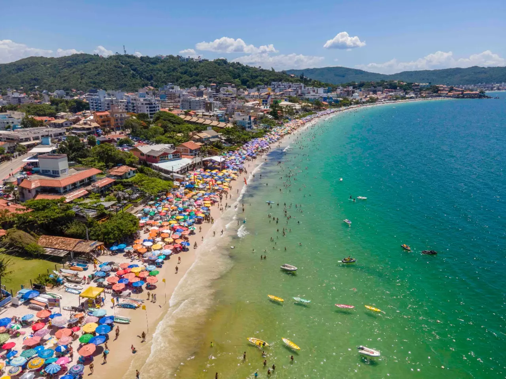
📍Bombinhas
Paraíso de águas cristalinas e piscinas naturais no litoral catarinense. O visitante encontra praias calmas como a de Bombas e Bombinhas,além de mirantes com vistas deslumbrantes. Perfeito para mergulho, famílias e quem busca sossego.
Minas Gerais

📍Ouro Preto
Patrimônio Mundial da UNESCO e joia do barroco brasileiro. O visitante encontra igrejas esculpidas por Aleijadinho, ladeiras de pedra, museus e o Museu da Inconfidência. Ideal para quem ama história, arquitetura colonial.
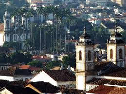
📍São João Del-Rei
Cidade histórica famosa pela Maria Fumaça, trem a vapor que vai até Tiradentes. O visitante encontra o Centro Histórico, a Catedral Basílica, o Museu Regional e igrejas barrocas. Ideal para quem busca história, charme e passeios de trem.
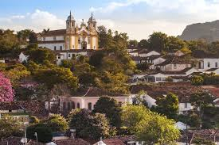
📍Tiradentes
Uma das cidades coloniais mais charmosas de Minas Gerais. O visitante encontra a Matriz de Santo Antônio, o forno de farinha, ruas de pedra e ótimos restaurantes. Perfeito para um final de semana romântico, cheio de história e boa gastronomia.
Paraiba
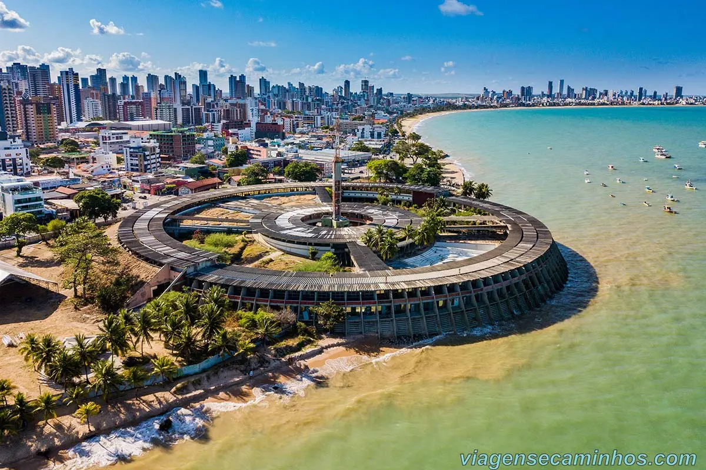
📍João Pessoa
Capital paraibana, conhecida como a "cidade mais verde do mundo" por sua imensa quantidade de árvores. Destaque para a Praia de Tambaú, o Farol do Cabo Branco, o Centro Histórico e a piscina natural do Picãozinho.
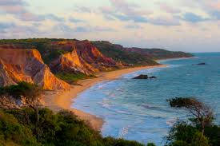
📍Praia de Tambaba
Praia famosa por ser um dos poucos destinos de naturismo liberado no Brasil. Tem falésias coloridas, águas mornas e um riozinho que deságua no mar. Perfeita para quem busca liberdade, respeito à natureza, tranquilidade e paisagens únicas.
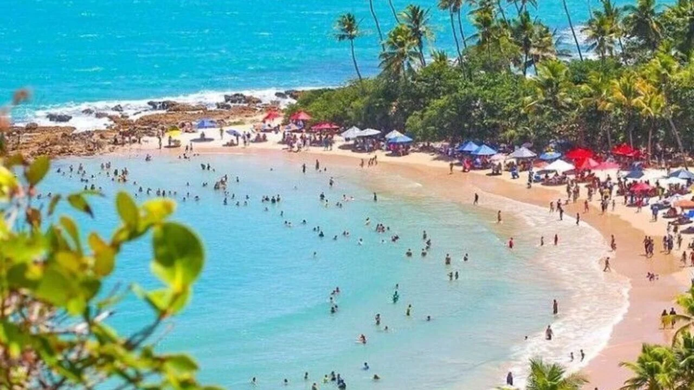
📍Praia do Coqueirinho
Praia badalada com piscinas naturais, falésias imponentes e uma das mais bonitas do Nordeste. Estrutura com barracas, passeios de buggy e águas verdes. Ideal para quem quer sol, mar, conforto, aventura e paisagens incríveis.
Pernambuco
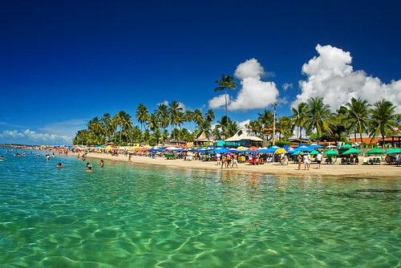
📍Porto de Galinhas
Praia de águas cristalinas e piscinas naturais formadas por corais vivos. Famosíssima pelas jangadas coloridas, mergulho com peixes e passeios a cavalo pela areia macia. O destino de sol e mar mais procurado e querido do estado.
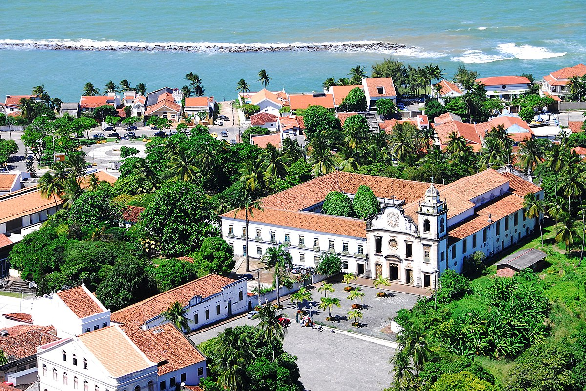
📍Olinda
Cidade colonial com ladeiras de paralelepípedo, igrejas barrocas e conventos seculares. Patrimônio da Humanidade pela UNESCO, tem um dos Carnavais mais animados do Brasil, com bonecos gigantes e frevo nas ruas. Imperdível e encantador.
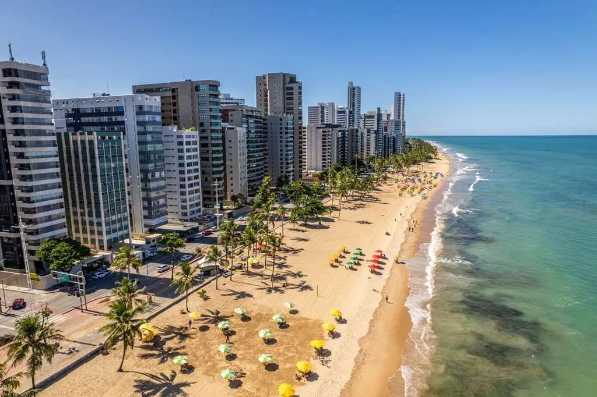
📍Recife
Capital pernambucana, berço do frevo, maracatu e do manguebeat. Destaque para o Recife Antigo, Marco Zero, Cais do Sertão, Torre Malakoff e as praias urbanas de Boa Viagem. Uma cidade vibrante, histórica e cheia de cultura.